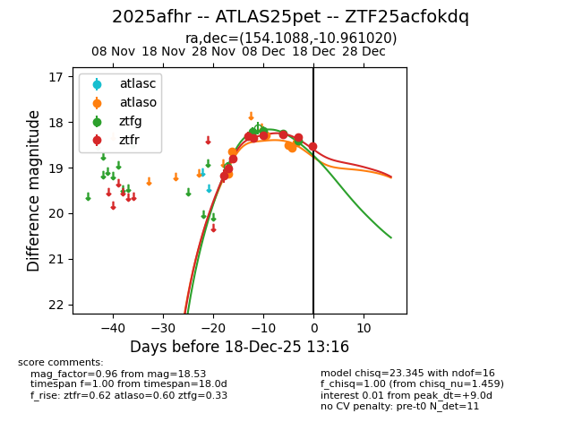
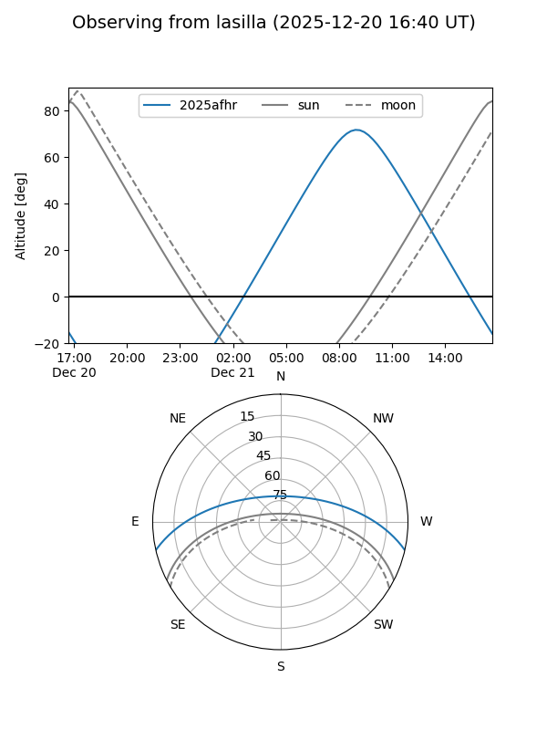
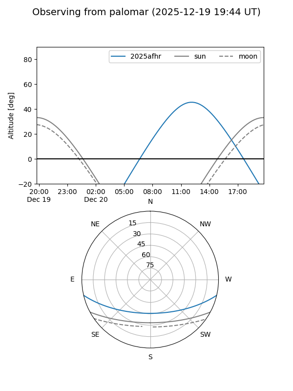
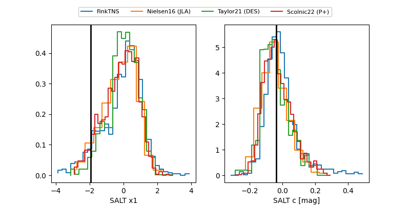

2025afhr
Target 2025afhr at 2025-12-21 12:07
Aliases and brokers:
FINK: fink-portal.org/ZTF25acfokdq
Lasair: lasair-ztf.lsst.ac.uk/objects/ZTF25acfokdq
ALeRCE: alerce.online/object/ZTF25acfokdq
TNS: wis-tns.org/object/2025afhr
YSE: ziggy.ucolick.org/yse/transient_detail/2025afhr
alt names
ZTF25acfokdq (ztf,fink_ztf)
2025afhr (tns,yse)
ATLAS25pet (atlas)
Coordinates:
equatorial (ra, dec) = 154.1088,-10.96102
equatorial (HMS+DMS) = 10:16:26.11,-10:57:39.67
galactic (l, b) = (253.0798,+36.49250)
Flags:
Photometry:
last atlaso=18.46, ztfg=19.01, ztfr=18.77
6 atlaso, 6 ztfg, 10 ztfr detections
Lightcurve

Visibility


Additional plots
